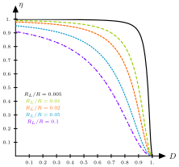

Equivalent Circuit Model of Steady-State Converter
Contents
Equivalent Circuit Model of Steady-State Converter#
The first ingredient of an equivalent circuit model is the DC Transformer.
DC Transformer Model#
For an ideal converter with efficiency \(\eta =100 \%\):
Thus, the ideal conversion ratio becomes:
{kind=link}
Fig. 34 Schematic of a converter.#
These equations are valid in steady-state. During transients, energy storage within filter elements may cause \(P_{in}\neq P_{out}\).
An equivalent circuit that satisfies these equations is given below.
{kind=link}
This equivalent circuit can in turn be represented with the DC transformer equivalent element as depicted below.
{kind=link}
Fig. 36 The DC transformer element equivalen to Fig. 35. Note the thick horizontal bar to remind ourself that this DC ``transformer’’ is just a model.#
Transformer Review#
A multiple winding transformer is given below.
{kind=link}
Fig. 37 A general multi-port transformer.#
One can reflect elements through the windings of a transformer to construct equivalent circuits.
The reflection of a voltage source, a current source, and an impedance through a transformer are presented below.
{kind=link}
{kind=link}
{kind=link}
Similarly, one can reflect voltage sources, current sources, and impedances through a DC transformer model and arrive at equivalent circuits.
{kind=link}
{kind=link}
{kind=link}
An ideal DC transformer would convert DC voltages and currents with 100% efficiency where the conversion ratio \(M(D)\) controllable via the duty cycle.
{kind=link}
Fig. 38 The choice of the duty cycle \(D\) changes the turn-ratio in a DC transformer model.#
In the schematic, the solid line denotes ideal transformer model, capable of passing DC voltages and currents. This leads to a time-invariant model (no switching) which can be solved to find DC components of converter waveforms and simplifies the analysis.
An example of application of the DC transformer model#
Consider the case where an input voltage source of \(V_1\) with a resistance equal to \(R_1\) is connected to an ideal buck converter. What is the relationship between the output voltage and the input voltage?
The circuit corresponding to this scenario is depicted below.
{kind=link}
Reflecting \(R_1\) through the DC transformer leads to:
{kind=link}
Solving the resulting circuit results in the relationship of interest:
Converter analysis in the presence of inductor copper loss#
The DC transformer model can be extended to include converter nonidealities, in this case the copper loss of the inductor.
The equivalent circuit of an inductor with some copper loss modelled as a resistance \(R_L\) is given below.
{kind=link}
A boost converter with this lossy inductor would look like:
{kind=link}
Let’s consider the behaviour of the converter when the switch is in positions 1 and 2.
Switch in position 1:
{kind=link}
Fig. 39 The boost converter circuit with a lossy inductor when the switch is in position 1.#
Inductor voltage: \(v_L = V_g - iR_L\)
Capacitor current: \(i_C=-v/R\)
Small ripple approximation:
Switch in position 2:
{kind=link}
Fig. 40 The boost converter circuit with a lossy inductor when the switch is in position 2.#
Inductor voltage: \(v_L = V_g - iR_L-v\)
Capacitor current: \(i_C=i-v/R\)
Small ripple approximation:
{kind=link}
Fig. 41 The voltage waveform of the inductor.#
Inductor volt-seconds balance in light of Fig. 41 is written as

Fig. 42 The current waveform of the capacitor.#
From Fig. 42, the capacitor charge balance yields
Thus,
For different ratios of \(\dfrac{R_L}{R}\), the conversion ratio \(M(D)\) for the lossy boost converter of this example is depicted below.
{kind=link}
Fig. 43 \(M(D)\) for different \(\dfrac{R_L}{R}\).#
Equivalent circuit model of converters#
In the first example to illustrate the method we consider the setting of a boost converter with a lossy inductor, then we construct the equivalent circuit model of a book converter with a lossy inductor, and finally, we study the effect of semiconductor losses.
Equivalent circuit model of a boost converter with lossy \(L\)#
We use the setting of the last example. Remember:
These can be seen as loop and node equations for some circuit. The question is how to reconstruct this circuit?
Note that the first equation is a loop equation obtained from the application of the Kirchoff’s voltage law: the dc components of voltage around a loop containing the inductor sum to zero. A circuit of the following form satisfies the equation
{kind=link}
Fig. 44 A circuit satisfying \(\langle v_L\rangle = 0=V_g -IR_L-D'V\).#
The second equation corresponds to a node equation obtained from the application of the Kirchoff’s current law: the dc components of current flowing into a node connected to the capacitor sum to zero.
{kind=link}
Fig. 45 A circuit satisfying \(\langle i_C\rangle = 0 = D' I -V/R\).#
Putting these two circuits side-by-side:
{kind=link}
Fig. 46 An equivalent circuit with dependent sources that satisfy (2).#
Similar to Fig. 35 and Fig. 36, the dependent sources can be modelled as a \(D' : 1\) DC transformer:
{kind=link}
Fig. 47 An equivalent circuit with a DC transformer element that satisfies (2).#
Pushing the elements through the transformer results in
{kind=link}
Output voltage:
Input current:
The converter efficiency is
Efficiency curves as a function of the duty cycle \(D\) for different \(\dfrac{R_L}{R}\) is given below.
{kind=link}
Equivalent circuit model of a buck converter with lossy \(L\)#
A buck converter with this lossy inductor would look like:
{kind=link}
Siimilar to the case of the boost converter studying the behaviour of the converter when the switch is in positions 1 and 2, and applying the small ripple approximation results in
These two equations lead to the following circuit:
{kind=link}
How should we obtain the rest of the circuit/transformer?
We have to find the input port of the converter.
Input current waveform \(i_g(t)\):
{kind=link}
The DC component (average value) of \(i_g(t)\) is computed as
The following circuit satisfies this node equation:
{kind=link}
Putting the two parts side-by-side, we obtain
{kind=link}
The dependent sources are equivalent to a \(1 : D\) transformer, and the equivalent circuit becomes:
{kind=link}
Equivalent circuit model of a boost converter in the presence of semi-conductor conduction losses#
The practical implementation of a boost converter is given below (we will learn about how to realise these devices using semiconductor devices later.)

We assume that the conduction losses of the semi-conductor devices in their on-state are modelled as the following:
MOSFET: on-resistance \(R_{on}\)
Diode: constant forward voltage \(V_D\) and on-resistance \(R_D\)
Let’s consider the behaviour of the converter when the switch is in positions 1 and 2.
Switch in position 1:
{kind=link}
Fig. 48 The boost converter circuit with a lossy inductor when the switch is in position 1.#
Inductor voltage: \(v_L = V_g - iR_L-iR_{on}\)
Capacitor current: \( i_C= -v/R \)
Small ripple approximation:
Switch in position 2:
{kind=link}
Fig. 49 The boost converter circuit with a lossy inductor when the switch is in position 2.#
Inductor voltage: \(v_L = V_g - iR_L-V_D-iR_D-v\)
Capacitor current: \(i_C=i-v/R\)
Small ripple approximation:
{kind=link}
Fig. 50 The voltage waveform of the inductor.#
Inductor volt-seconds balance in light of Fig. 50 is written as
Fig. 51 The current waveform of the capacitor.#
From Fig. 51, the capacitor charge balance yields
The following circuit satsifies the loop equation:
{kind=link}
The following circuit satsifies the node equation:
{kind=link}
Putting the two parts side-by-side one obtains
{kind=link}
Replacing the dependance sources with a dc transformer yields the desired equivalent circuit:
{kind=link}
Solving the circuit for the output voltage, one obtains
Moreover, the converter efficiency is computed to be
The condiitons underwhich the converter may poerate with high efficiency can be characterised by answering the following question:
When does \(\eta\rightarrow 1\)?
\(V_D \ll V_g/D'\) and
\(R_L+DR_{on}+D'R_D\ll D'^2 R \)
A note on the accuracy of the averaged equivalent circuit in predicting losses#
RMS values need to be used to correctly model average power loss in resistor.
The models obtained above use average currents and voltages. For small ripples these values are very close. However, if the ripples are large the discrepency between these two models grow.
{kind=link}
Fig. 52 Different current waveforms with \(I_{rms} = \sqrt{D}I \sqrt{1+\dfrac{1}{3} \left ( \dfrac{\Delta i}{I}\right )^2}\).#
The following table demonstrates the relationship between the consumed power using the average variables versus the real power computed using the RMS current value.
current ripple |
Transistor RMS current |
\(P_{ave}\) in \(R_{on}\) |
|---|---|---|
\(\Delta i =0\) |
\(I\sqrt{D}\) |
\(DI^2R_{on}\) |
\(\Delta i =0.1I\) |
\(1.00167 I\sqrt{D}\) |
\(1.0033 DI^2R_{on}\) |
\(\Delta i =I\) |
\(1.155 I\sqrt{D}\) |
\(1.3333 DI^2R_{on}\) |
Summary#
The dc transformer model represents the primary functions of any dc-dc converter: transformation of dc voltage and current levels, ideally with 100% efficiency, and control of the conversion ratio \(M\) via the duty cycle \(D\).
The model can be refined to account for loss elements such as inductor winding resistance and semiconductor on-resistances and forward voltage drops. The refined model predicts the voltages, currents, and efficiency of practical nonideal converters.
In general, the dc equivalent circuit for a converter can be derived from the inductor volt-second balance and capacitor charge balance equations. Equivalent circuits are constructed whose loop and node equations coincide with the volt-second and charge balance equations. In converters having a pulsating input current, an additional equation is needed to model the converter input port; this equation may be obtained by averaging the converter input current.